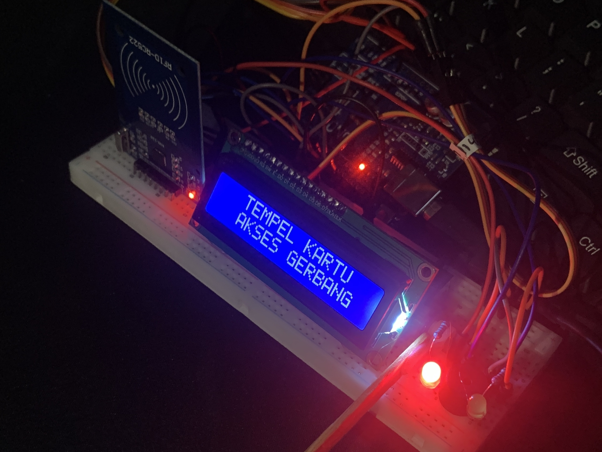

Panduan DIY: Sistem Palang Pintu Otomatis & Akses Kontrol Berbasis RFID RC522
Pelajari cara membuat sistem palang pintu otomatis berbasis RFID RC522, Servo, LCD I2C, dan Arduino Uno untuk keamanan akses gerbang modern.

Rangkaian hardware sistem palang pintu otomatis RFID RC522 dengan tampilan LCD I2C 16x2.
Konsep & Cara Kerja Sistem
Sistem smart gate ini menggunakan **Arduino Uno** sebagai pusat pemroses data dan modul **RFID RC522** untuk membaca Unique Identifier (UID) dari kartu akses:
Pengguna menempelkan kartu/keyfob RFID ke modul pembaca RC522.
Arduino mencocokkan kode UID kartu dengan data yang terdaftar pada sistem.
Jika sah, palang servo membuka. Jika tidak, LED merah berkedip dan buzzer memicu alarm.
Respon & Status Akses Sistem:
Cara Mengetahui & Memeriksa Kode UID Kartu RFID
Setiap kartu/gantungan kunci RFID memiliki kode unik (UID) 4-byte. Sebelum menjalankan kode palang pintu, jalankan program checker ini terlebih dahulu untuk membaca kode UID milikmu.
#include <SPI.h>
#include <MFRC522.h>
#define SS_PIN 10
#define RST_PIN 9
MFRC522 rfid(SS_PIN, RST_PIN);
void setup() {
Serial.begin(9600);
SPI.begin();
rfid.PCD_Init();
Serial.println("--- TEMPELKAN KARTU RFID UNTUK MEMBACA UID ---");
}
void loop() {
if (!rfid.PICC_IsNewCardPresent() || !rfid.PICC_ReadCardSerial()) {
return;
}
Serial.print("KODE UID KARTU KAMU: ");
for (byte i = 0; i < rfid.uid.size; i++) {
Serial.print("0x");
if (rfid.uid.uidByte[i] < 0x10) Serial.print("0");
Serial.print(rfid.uid.uidByte[i], HEX);
if (i < rfid.uid.size - 1) Serial.print(", ");
}
Serial.println();
rfid.PICC_HaltA();
rfid.PCD_StopCrypto1();
delay(1000);
}Cara Membaca Output dari Serial Monitor:
- Upload program reader di atas ke Arduino.
- Buka Serial Monitor (Ctrl + Shift + M) dan set Baud Rate ke
9600. - Tempelkan kartu RFID pada sensor. Hasil pembacaan akan muncul seperti ini:
KODE UID KARTU KAMU: 0xB5, 0x7A, 0x17, 0x07
- Salin deretan kode byte tersebut ke variabel
uidKartuAkses[]di program utama di bawah.
Alat & Bahan yang Dibutuhkan
Skema Wiring / Pinout Arduino Lengkap
| Nama Komponen | Pin Komponen | Sambungan ke Arduino / Daya |
|---|---|---|
| Modul RFID RC522 | VCC | 3.3V (Wajib 3.3V, jangan ke 5V!) |
| RST | Pin D9 | |
| GND | GND | |
| MISO | Pin D12 | |
| MOSI | Pin D11 | |
| SCK | Pin D13 | |
| SDA (SS) | Pin D10 | |
| LCD 16x2 I2C | VCC | 5V |
| GND | GND | |
| SDA | Pin A4 | |
| SCL | Pin A5 | |
| Servo Motor (SG90) | Signal (Kuning / Oranye) | Pin D8 |
| VCC / Power (Merah) | 5V (Rekomendasi adaptor/power eksternal) | |
| GND (Cokelat / Hitam) | GND (Gabungkan GND Arduino & Power Eksternal) | |
| LED Merah | Anoda (+) kaki panjang | Pin D4 (Melalui Resistor 220Ω) |
| Katoda (-) kaki pendek | GND | |
| LED Hijau | Anoda (+) kaki panjang | Pin D5 (Melalui Resistor 220Ω) |
| Katoda (-) kaki pendek | GND | |
| Buzzer Aktif | Positif (+) | Pin D6 |
| Negatif (-) | GND |
Arduino Source Code Utama (C++)
#include <SPI.h>
#include <MFRC522.h>
#include <Wire.h>
#include <LiquidCrystal_I2C.h>
#include <Servo.h>
#define SS_PIN 10
#define RST_PIN 9
#define LED_MERAH 4
#define LED_HIJAU 5
#define BUZZER_PIN 6
#define SERVO_PIN 8
MFRC522 rfid(SS_PIN, RST_PIN);
LiquidCrystal_I2C lcd(0x27, 16, 2);
Servo palangServo;
// KODE UID KARTU YANG DIIZINKAN (Ubah sesuai hasil program reader kamu)
byte uidKartuAkses[] = {0xB5, 0x7A, 0x17, 0x07};
void setup() {
SPI.begin();
rfid.PCD_Init();
lcd.init();
lcd.backlight();
pinMode(LED_MERAH, OUTPUT);
pinMode(LED_HIJAU, OUTPUT);
pinMode(BUZZER_PIN, OUTPUT);
palangServo.attach(SERVO_PIN);
palangServo.write(140); // Posisi palang tertutup
tampilkanStandby();
}
void loop() {
if (!rfid.PICC_IsNewCardPresent() || !rfid.PICC_ReadCardSerial()) {
return;
}
bool aksesDiterima = true;
for (byte i = 0; i < rfid.uid.size; i++) {
if (rfid.uid.uidByte[i] != uidKartuAkses[i]) {
aksesDiterima = false;
break;
}
}
if (aksesDiterima) {
// 1. AKSES DITERIMA
digitalWrite(LED_MERAH, LOW);
digitalWrite(LED_HIJAU, HIGH); // Nyalakan LED Hijau
lcd.clear();
lcd.setCursor(0, 0);
lcd.print(" AKSES DITERIMA ");
lcd.setCursor(0, 1);
lcd.print("Silakan Masuk..");
// Sound Beep 2x
digitalWrite(BUZZER_PIN, HIGH); delay(100);
digitalWrite(BUZZER_PIN, LOW); delay(100);
digitalWrite(BUZZER_PIN, HIGH); delay(100);
digitalWrite(BUZZER_PIN, LOW);
palangServo.write(14); // Buka Gerbang
delay(3000); // Tahan 3 detik
palangServo.write(140); // Tutup Gerbang Kembali
} else {
// 2. AKSES DITOLAK
digitalWrite(LED_HIJAU, LOW);
// Kedipkan LED Merah sebagai tanda peringatan
for(int i = 0; i < 3; i++) {
digitalWrite(LED_MERAH, LOW); delay(100);
digitalWrite(LED_MERAH, HIGH); delay(100);
}
lcd.clear();
lcd.setCursor(0, 0);
lcd.print(" AKSES DITOLAK ");
lcd.setCursor(0, 1);
lcd.print("Kartu Tidak Sah!");
digitalWrite(BUZZER_PIN, HIGH);
delay(1000);
digitalWrite(BUZZER_PIN, LOW);
}
rfid.PICC_HaltA();
rfid.PCD_StopCrypto1();
delay(1000);
tampilkanStandby();
}
void tampilkanStandby() {
digitalWrite(LED_MERAH, HIGH); // Standby LED Merah ON
digitalWrite(LED_HIJAU, LOW); // Standby LED Hijau OFF
lcd.clear();
lcd.setCursor(0, 0);
lcd.print(" TEMPEL KARTU ");
lcd.setCursor(0, 1);
lcd.print(" AKSES GERBANG ");
}